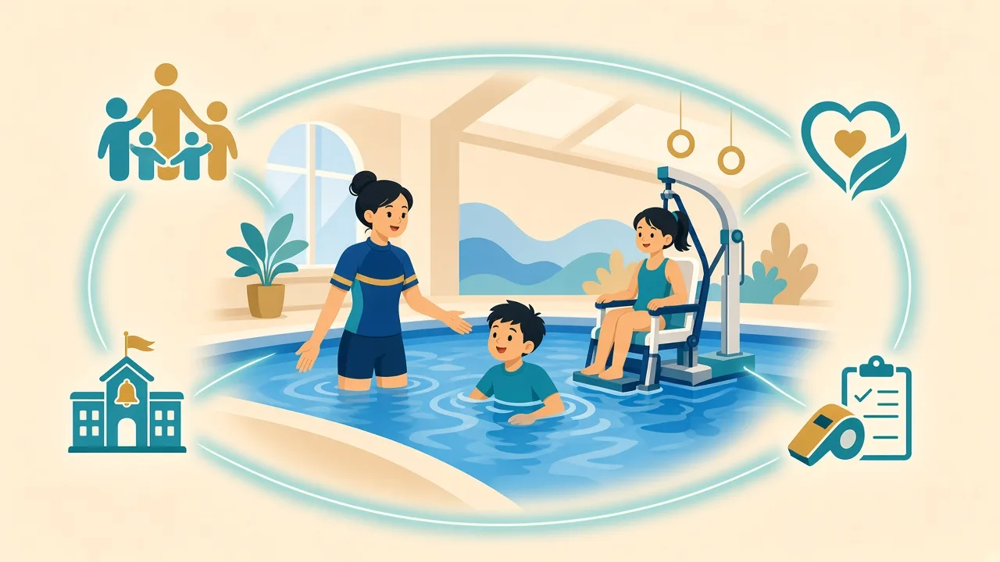

特殊教育需要（課程發展）— 教育局
課程發展議會轄下特殊教育需要委員會策劃課程方向：教學指引、學習重點、評估示例、校本課程、教學資源與研討／種籽計劃。課程發展持續修訂，需要學校、前線同工及家長參與。
家長入門：概念層面的認識，方便與學校、服務及游泳課溝通

特殊教育需要泛指孩子在學習、溝通、感官、肢體或行為情緒上，需要額外或個別化支援，才能更公平地參與日常學習與活動。常見類別包括：自閉症譜系、專注力不足／過度活躍症（ADHD）、讀寫障礙、肢體／視覺／聽力障礙、智力障礙、唐氏綜合症等。同一標籤下，每位孩子的能力與需要仍可以差別很大。
社會對特殊需要的理解亦在轉變：早期標籤式稱呼容易帶來偏見，現今更強調去污名化與尊重個體差異，並受《聯合國殘疾人權利公約》等理念影響——每位孩子都有平等參與學習與社區生活的權利。

以下整理自教育局公開網頁，方便家長與同行先找到官方入口。申請、資源與最新安排一律以原文／學校通知為準；本會不代辦申請。
課程發展議會轄下特殊教育需要委員會策劃課程方向：教學指引、學習重點、評估示例、校本課程、教學資源與研討／種籽計劃。課程發展持續修訂，需要學校、前線同工及家長參與。
教育局融合教育／特殊教育資訊入口，涵蓋家長資訊、學與教、三層支援與相關資源。
面向家長及公眾的融合教育資訊整理，適合先建立家校溝通的基本認識。
特殊教育制度與支援相關資源總覽。
以下為教育局公開網頁之摘要整理，供家長／教練認識入口；申請資格、資源與最新指引一律以教育局原文為準。本站不代辦申請，亦不構成醫療或法律意見。課程發展查詢可參閱教育局專頁所列高級課程發展主任（特殊教育需要）聯絡：scdosen@edb.gov.hk／2892 6524。
這些是學校融合教育常見用語的家長向摘要，方便你跟教練、SENCO 對齊說法——不是要家長背政策。
以上屬公開資訊層面的整理，實際資格與申請以相關部門／機構最新指引為準。
官方入口請先看教育局區塊。若想另以清單方式認識不同身心狀況名稱，亦可參閱香港教育大學（EdUHK）健康與體育學系高級講師 Roy Chan 公開的 Padlet《List of Disorder》。這是第三方教學整理，並非醫療診斷；內容與更新以原作者為準。本站家長資源亦有同一連結。
游泳不是取代醫療或學校支援，而是補足身體活動、安全感與生活技能的一環。新天地會請家長簡述：孩子已有的評估重點、學校或治療師的建議、泳池環境的敏感點（聲音、觸覺、水深）。課堂上我們會用可預期流程、分步目標與安全守則，讓水中學習與日常生活節奏互相配合。
溫馨提示：本頁為家長教育整理，供認識特殊需要與游泳教學方向參考，並非醫療診斷或治療建議。孩子個別安排請 WhatsApp 與教練商討。
可以。我們重視孩子在水中的實際需要多於標籤。若家長觀察到感官敏感、專注短暫或溝通節奏不同，歡迎先 WhatsApp 描述情況，我們會建議合適的起步方式。
我們可按家庭時間商量班別；亦鼓勵家長把學校與治療師的建議告訴教練，方便統一「小步驟」目標，避免孩子同時面對太多新要求。
每位孩子節奏不同。游泳課的目標是安全、自信與可持續的進步，而不是與他人比較「何時康復」。把小進步寫下來，往往比焦慮「何時正常」更有幫助。
我們不會承諾時間表。進步用看得見的行為描述（例如「聽到停就停」「願意坐池邊吹泡泡」），而不是用「幾多堂康復」來衡量。詳見課堂怎樣上。
教育局資料幫你了解學校／課程支援的共同語言（例如三層支援、SENCO）。游泳課是社區康樂與身體活動的一環，用來補足安全感與生活技能，不是取代學校或醫療。把兩邊的觀察用具體句子對齊，孩子較少同時面對互相矛盾的要求。
延伸閱讀：特殊需要游泳運動發展 · 認識特殊需要總覽 · 家長資源・公開學習